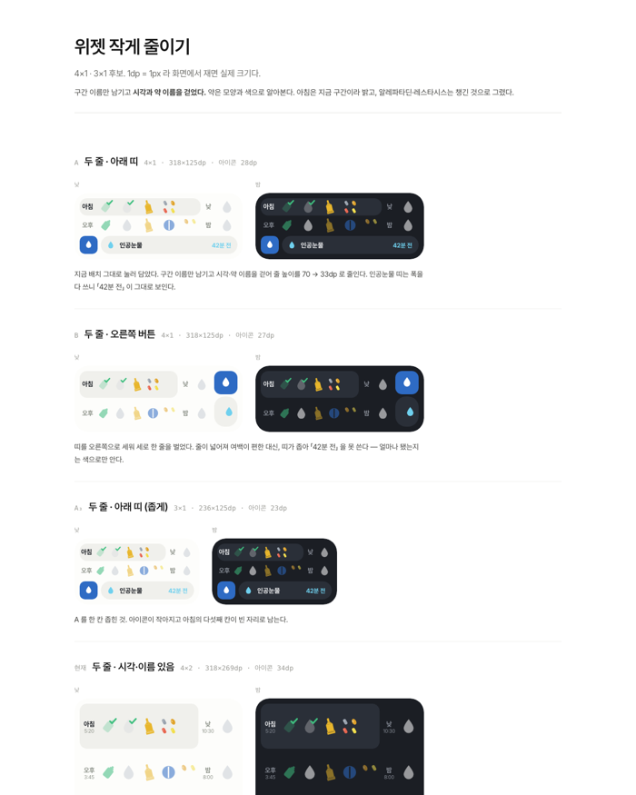
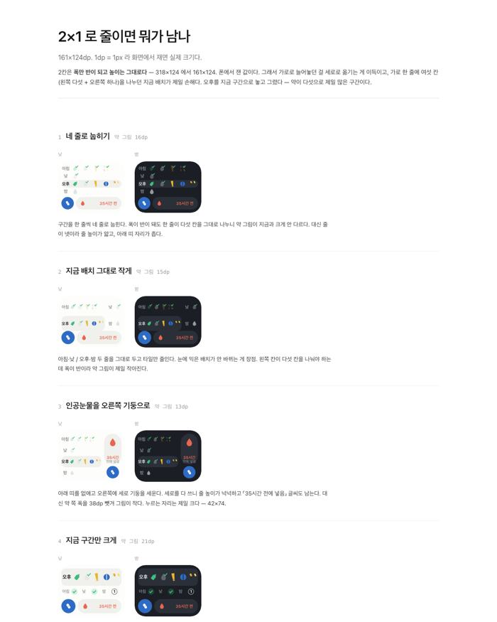
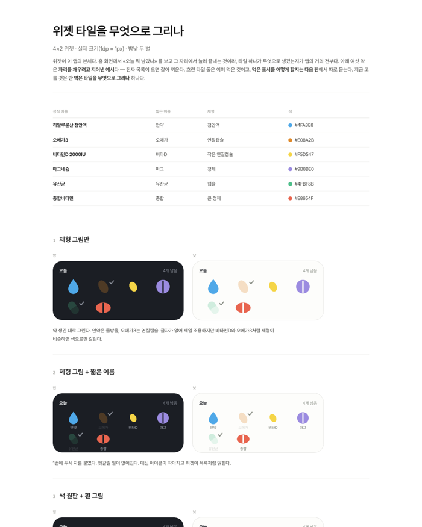
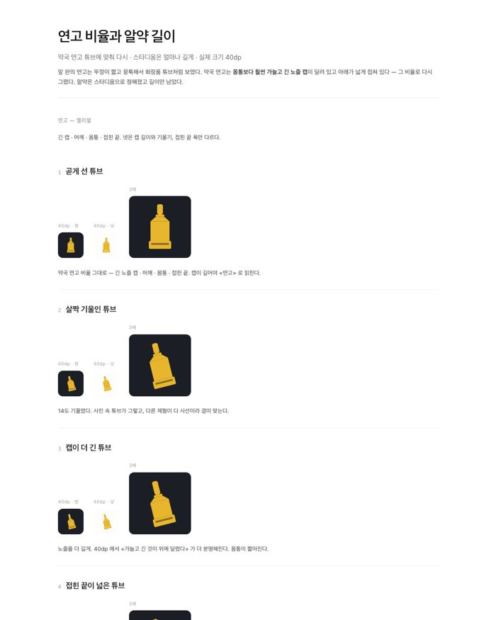
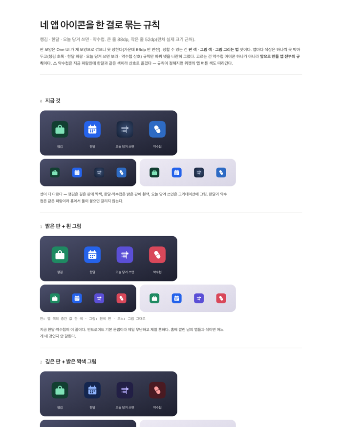
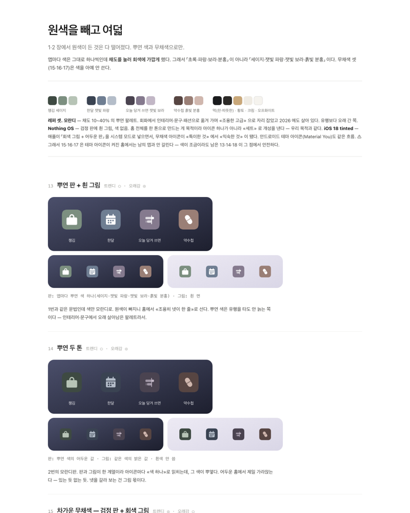
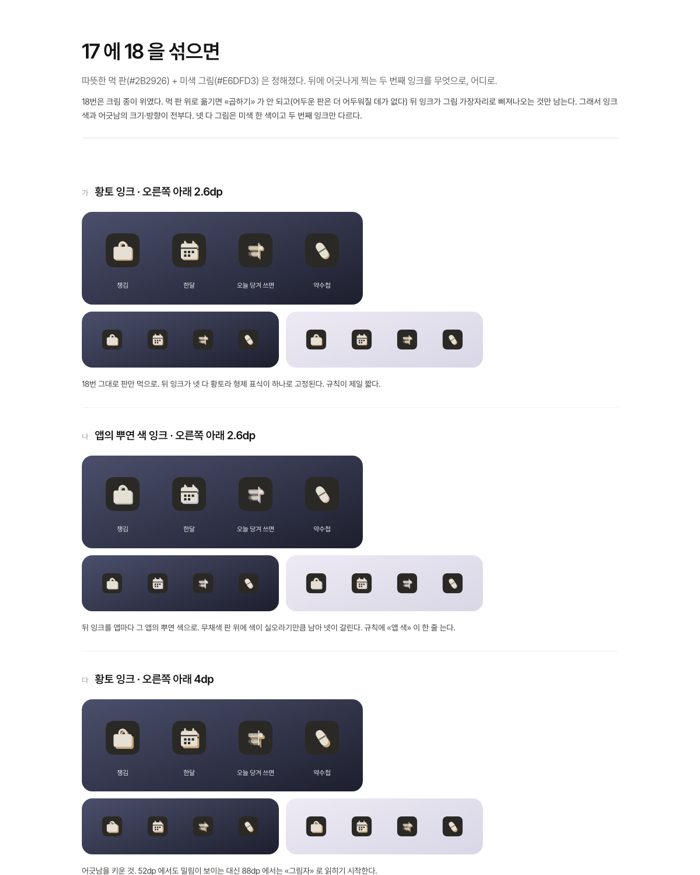

지금은 화면 넉 장을 격자로 늘어놓은 것뿐이다. 캡션의 「3안」·「5안」 같은 수가 글자로만 있고 그림에는 안 보인다.
본문 폭은 실제 편과 같은 782px. 후보 수는 실제 시안 페이지를 세어 얻었다.
⚠ 일곱 판 중 여섯은 「고른 안」 표시가 없다. 아이콘 잉크 판만 「가」를 골랐다고 적혀 있어, 그 하나만 칠했다.
판마다 「무엇을 물었나」가 한 줄로 서고, 후보 수가 막대로 나란히 선다. 판 이름이 아니라 물음이 열의 주인공이다.
질문 하나로 좁히고, 후보를 실제 크기로 그려 화면에서 선택.
| 갈래 | 물은 것 | 후보 | 메모 | |
|---|---|---|---|---|
| 위젯 | 4×1 로 줄이면 무엇을 빼나 | 4 | 시각과 이름을 뺀 레이아웃 | |
| 위젯 | 폭이 절반이면 무엇을 그리나 | 5 | 2×1 배치. 지금 4×1 을 옆에 두고 견줌 | |
| 위젯 | 약을 무엇으로 그리나 | 7 | 이모지는 영양제에 맞는 것이 없어 💊 가 겹침 | |
| 위젯 | 제형 아이콘의 비율은 | 8 | 연고 튜브 넷과 알약 넷 | |
| 아이콘 | 네 앱을 한 규칙으로 묶으려면 | 6 | 지금 것을 포함해 견줌 | |
| 아이콘 | 원색을 빼면 무엇이 남나 | 8 | 저채도와 무채색 | |
| 아이콘 | 먹색 판에 무슨 잉크를 얹나 | 4 | 「가」 — 황토 잉크, 오른쪽 아래로 2.6dp |
후보 수만큼 네모를 그린다. 「8안」이라고 쓰는 대신 여덟 개가 실제로 보인다. 고른 것이 적힌 판은 그 하나만 칠했다.
질문 하나로 좁히고, 후보를 실제 크기로 그려 화면에서 선택.
42개를 그려 놓고 일곱 번 골랐다.
이 절의 본문이 실제로 말하는 것은 절차다. 네 걸음으로 세우고, 본문에 있던 「틀린 결론」을 따로 세운다.
에뮬레이터 dp 로 그렸더니 넘쳤다. 폰에 올려 실제 값을 재고 나서야 맞는 크기로 그려졌다.
위젯 판 넷과 아이콘 판 셋으로 갈린다. 갈래마다 후보 수를 합쳐 어디에 손이 더 갔는지 보인다.
질문 하나로 좁히고, 후보를 실제 크기로 그려 화면에서 선택.
격자는 그대로 두고 그림 위에 후보 수 뱃지를 붙인다. 손이 가장 덜 가고, 일곱 판을 다 보인다.
질문 하나로 좁히고, 후보를 실제 크기로 그려 화면에서 선택.







| 지금 | N1 표 | N2 점 | N3 절차 | N4 갈래 | N5 뱃지 | |
|---|---|---|---|---|---|---|
| 후보 수가 보이나 | 글자로만 | 막대로 | 실제 개수만큼 | 안 보임 | 실제 개수만큼 | 글자로 |
| 물음이 보이나 | 캡션에 섞임 | 한 열로 | 한 줄로 | 예시 하나만 | 한 줄로 | 캡션에 |
| 시안 그림 | 넉 장 | 없음 — 링크로 | 없음 — 링크로 | 없음 | 없음 — 링크로 | 일곱 장 |
| 절차가 보이나 | 줄글 | 줄글 | 줄글 | 네 걸음으로 | 줄글 | 줄글 |
| 「틀린 결론」 | 줄글에 묻힘 | 묻힘 | 묻힘 | 따로 섬 | 묻힘 | 묻힘 |
| 세로 길이 | 보통 | 짧음 | 짧음 | 짧음 | 짧음 | 가장 김 |